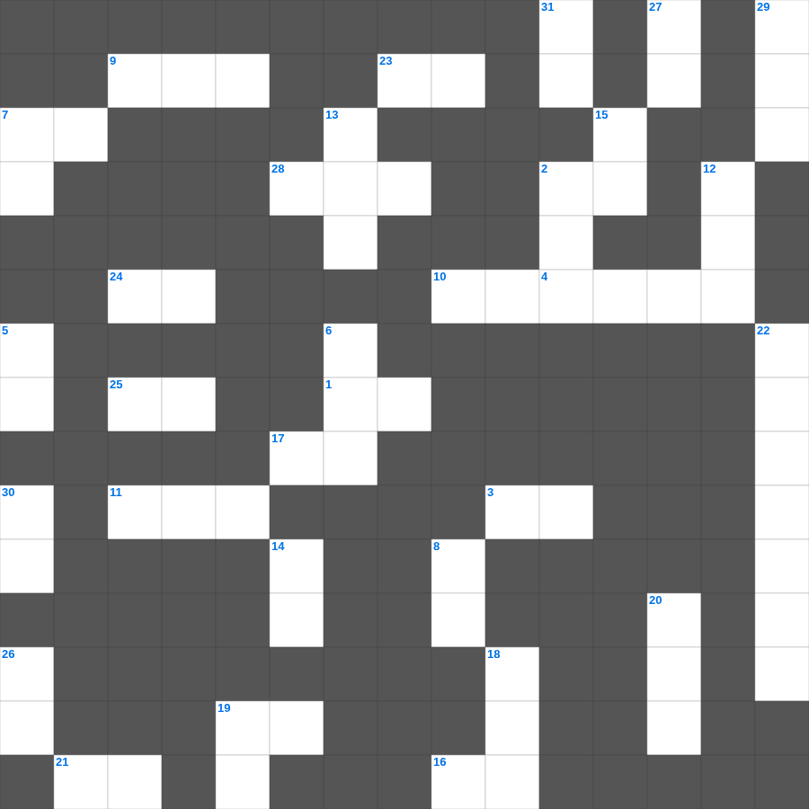

십계명 (전반부)
📌 서비스 정의
십자가로세로는 교회 주보와 주일학교에서 사용할 수 있는 성경 기반 가로세로 퍼즐 서비스입니다. 성경 인물, 사건, 핵심 구절을 바탕으로 제작되었습니다. 온라인 풀이 및 인쇄 기능을 제공합니다.
무료로 즐기는 십계명 십계명 가로세로 퀴즈! 35개의 힌트로 구성된 가로세로 낱말 퍼즐입니다. PC와 모바일 모두 지원되며, 정답을 바로 확인할 수 있어 혼자서도 쉽게 풀 수 있습니다.

📝 가로 힌트
1. 예수님이 첫 기적(물로 포도주)을 베푸신 곳
2. 호흡이 있는 자마다 찬양하라 이것으로
3. 믿음의 이것으로 악한 자의 화전을 소멸함
4. 쉬지 말고 이것하라
4. 하나님과 대화하는 것
7. 어려운 이웃을 돕는 일
9. 맥추절 혹은 칠칠절이라 불리는 신약의 절기
10. 성경의 맨 처음 책
11. 모세의 누나
16. 예수님은 우리의 영원한 이것(길, 진리, 이것)
17. 주 예수여 이것 오시옵소서
19. 친구를 위하여 자기 이것을 버리면 이보다 큰 사랑이 없음
21. 부활하신 날은 안식 후 이것
23. 이스라엘아 들으라 (신명기 6:4)
24. 너희 죄를 서로 이것하며 병이 낫기를 위하여 서로 기도하라
25. 네 이웃에 대하여 거짓 이것하지 말라
28. 언어가 혼잡하게 된 곳
📝 세로 힌트
2. 예수님이 세례받으실 때 성령이 이 모양으로 내려옴
5. 예배의 시작을 알리는 종소리나 기도
6. 시편, 잠언, 전도서 등을 일컫는 말
7. 아기 예수님이 누우셨던 곳
8. 여호와 이것: 평강의 하나님
12. 삼손의 힘의 비밀을 알아낸 여인
13. 언어가 혼잡해져 사람들이 흩어지게 된 탑
14. 양 떼를 치는 감독자
15. 여호와 이것: 치료하시는 하나님
18. 베드로가 하루에 전도하여 세례받은 사람 수
19. 여호와는 나의 이것이시니 내게 부족함이 없으리로다
20. 예수님이 십자가를 지고 오르신 언덕
22. 사도 바울의 자비량 사역 직업
26. 슬플 때 찢으며 입었던 옷
27. 데살로니가 사람들이 베레아 사람보다 더 간절히 본 것
29. 하나님의 보좌 앞 일곱 등불
30. 여섯째 날 마지막에 만드신 존재
31. 예수님이 부활 후 고기를 구우신 숯불
🧑🏫 교회 교육 자료 활용
이 퍼즐은 주일학교 교재 추천 자료로 활용할 수 있고, 주일학교 주보에 넣기 좋은 분량으로 구성되어 있습니다. 수업용 주일학교 교안에 활동지로 붙이거나, 예배 후 복습용 주일학교 공과교재로 바로 사용할 수 있습니다.
🏷️ 키워드
십계명 가로세로 퀴즈, 십계명, 십자가로세로, 성경퀴즈, 말씀퀴즈, 가로세로퍼즐, 주일학교 교재 추천, 주일학교 주보, 주일학교 교안, 주일학교 공과교재